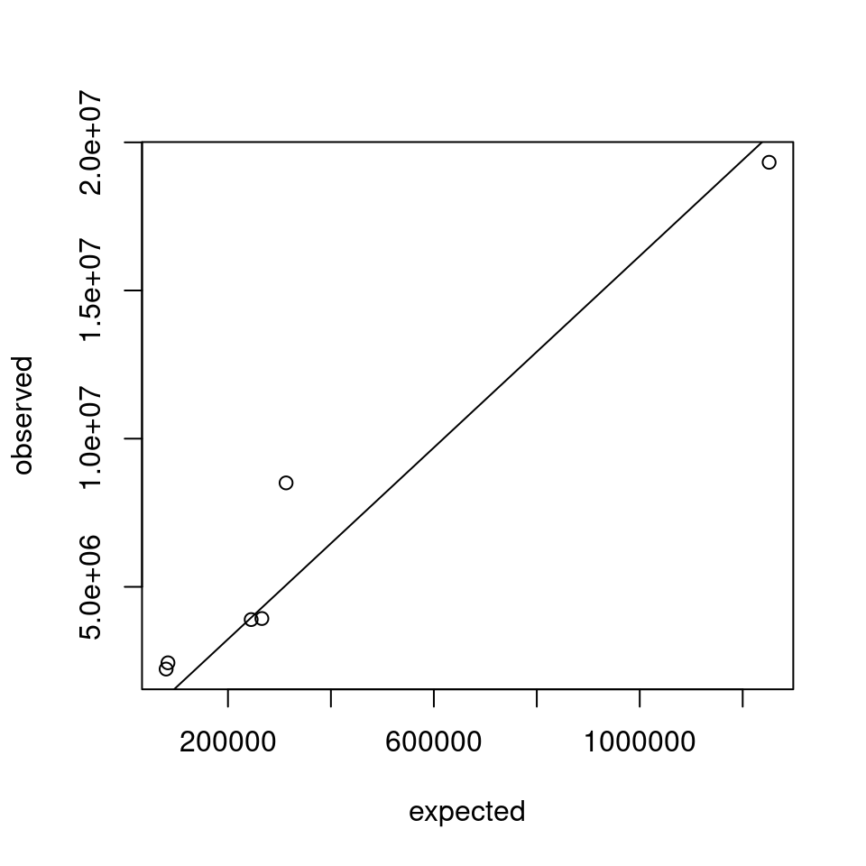
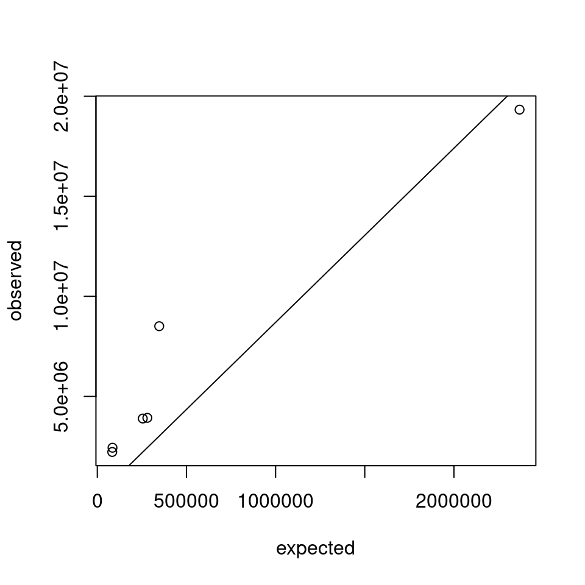
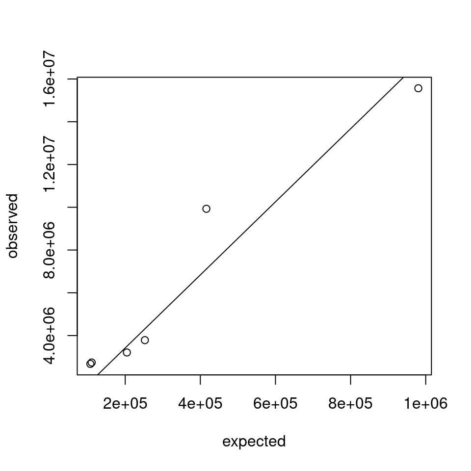
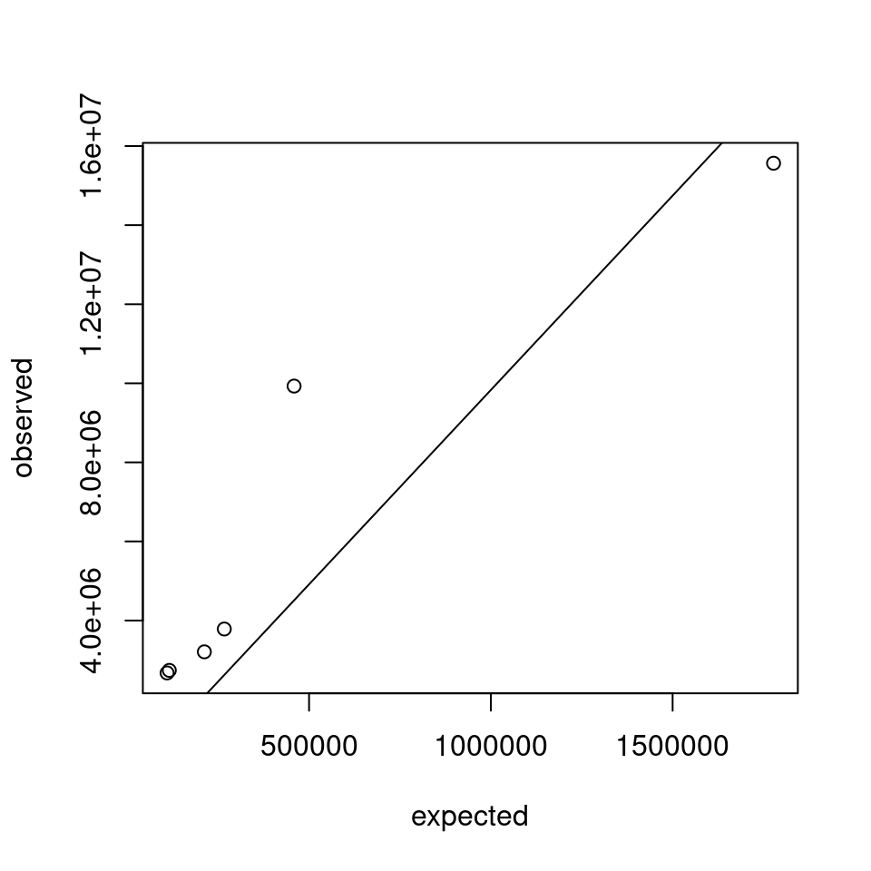

Last updated: 2023-04-02
Checks: 6 1
Knit directory: mutation_rate/
This reproducible R Markdown analysis was created with workflowr (version 1.7.0). The Checks tab describes the reproducibility checks that were applied when the results were created. The Past versions tab lists the development history.
The R Markdown is untracked by Git. To know which version of the R
Markdown file created these results, you’ll want to first commit it to
the Git repo. If you’re still working on the analysis, you can ignore
this warning. When you’re finished, you can run
wflow_publish to commit the R Markdown file and build the
HTML.
Great job! The global environment was empty. Objects defined in the global environment can affect the analysis in your R Markdown file in unknown ways. For reproduciblity it’s best to always run the code in an empty environment.
The command set.seed(20230228) was run prior to running
the code in the R Markdown file. Setting a seed ensures that any results
that rely on randomness, e.g. subsampling or permutations, are
reproducible.
Great job! Recording the operating system, R version, and package versions is critical for reproducibility.
Nice! There were no cached chunks for this analysis, so you can be confident that you successfully produced the results during this run.
Great job! Using relative paths to the files within your workflowr project makes it easier to run your code on other machines.
Great! You are using Git for version control. Tracking code development and connecting the code version to the results is critical for reproducibility.
The results in this page were generated with repository version 38fef77. See the Past versions tab to see a history of the changes made to the R Markdown and HTML files.
Note that you need to be careful to ensure that all relevant files for
the analysis have been committed to Git prior to generating the results
(you can use wflow_publish or
wflow_git_commit). workflowr only checks the R Markdown
file, but you know if there are other scripts or data files that it
depends on. Below is the status of the Git repository when the results
were generated:
Untracked files:
Untracked: analysis/gnomad_exp_obs.Rmd
Unstaged changes:
Modified: analysis/reproducing_SC.Rmd
Note that any generated files, e.g. HTML, png, CSS, etc., are not included in this status report because it is ok for generated content to have uncommitted changes.
There are no past versions. Publish this analysis with
wflow_publish() to start tracking its development.
SNV from gnomAD v3.1 whole genome
Considering the 6 mutation types as a whole
CHROM POS REF ALT ID_exp QUAL_exp FILTER_exp MR p
1 22 10510413 G A . . low 0.128 0.12014662
2 22 10510413 G C . . low 0.051 0.04972133
3 22 10510413 G T . . low 0.073 0.07039917
4 22 10510424 A C . . low 0.030 0.02955447
5 22 10510424 A G . . low 0.073 0.07039917
6 22 10510424 A T . . low 0.013 0.01291586
ID_obs QUAL_obs FILTER_obs AN AC AF
1 . . PASS 25930 2 7.71307e-05
2 <NA> <NA> <NA> NA NA NA
3 <NA> <NA> <NA> NA NA NA
4 <NA> <NA> <NA> NA NA NA
5 rs1268976573 . PASS 27350 1 3.65631e-05
6 <NA> <NA> <NA> NA NA NA[1] "The observed mutation count is 40317642"[1] "The expected mutation rate is 2238558.13213428"Considering the 6 mutation types separately
[1] "A-C"[1] "The observed mutation count is 2435592"[1] "The expected mutation rate is 83414.7154197101"[1] "A-G"[1] "The observed mutation count is 8507194"[1] "The expected mutation rate is 312909.337933403"[1] "A-T"[1] "The observed mutation count is 2224475"[1] "The expected mutation rate is 79874.9682219173"[1] "C-A"[1] "The observed mutation count is 3929952"[1] "The expected mutation rate is 265885.771542358"[1] "C-G"[1] "The observed mutation count is 3894305"[1] "The expected mutation rate is 245092.520241789"[1] "C-T"[1] "The observed mutation count is 19326124"[1] "The expected mutation rate is 1251380.81877508"[1] "fitting: observed ~ expexted + 0"
Call:
lm(formula = observed ~ expected + 0)
Residuals:
1 2 3 4 5 6
933264 1087160 3448891 -902943 -67713 -368197
Coefficients:
Estimate Std. Error t value Pr(>|t|)
expected 16.165 1.284 12.59 5.61e-05 ***
---
Signif. codes: 0 '***' 0.001 '**' 0.01 '*' 0.05 '.' 0.1 ' ' 1
Residual standard error: 1726000 on 5 degrees of freedom
Multiple R-squared: 0.9694, Adjusted R-squared: 0.9633
F-statistic: 158.5 on 1 and 5 DF, p-value: 5.614e-05Considering the 6 mutation types as a whole
CHROM POS REF ALT ID_exp QUAL_exp FILTER_exp MR ID_obs QUAL_obs
1 22 10510413 G A . . low 0.128 . .
2 22 10510413 G C . . low 0.051 <NA> <NA>
3 22 10510413 G T . . low 0.073 <NA> <NA>
4 22 10510424 A C . . low 0.030 <NA> <NA>
5 22 10510424 A G . . low 0.073 rs1268976573 .
6 22 10510424 A T . . low 0.013 <NA> <NA>
FILTER_obs AN AC AF
1 PASS 25930 2 7.71307e-05
2 <NA> NA NA NA
3 <NA> NA NA NA
4 <NA> NA NA NA
5 PASS 27350 1 3.65631e-05
6 <NA> NA NA NA[1] "The observed mutation count is 5294309561"[1] "The expected mutation rate is 3419901.70499986"Considering the 6 mutation types separately
[1] "A-C"[1] "The observed mutation count is 396146941"[1] "The expected mutation rate is 85315.2040000007"[1] "A-G"[1] "The observed mutation count is 1834379441"[1] "The expected mutation rate is 347197.945999998"[1] "A-T"[1] "The observed mutation count is 295488905"[1] "The expected mutation rate is 83753.0860000007"[1] "C-A"[1] "The observed mutation count is 406443146"[1] "The expected mutation rate is 280647.931999997"[1] "C-G"[1] "The observed mutation count is 506767460"[1] "The expected mutation rate is 255014.787999997"[1] "C-T"[1] "The observed mutation count is 1855083668"[1] "The expected mutation rate is 2367972.749"[1] "fitting: observed ~ expexted + 0"
Call:
lm(formula = observed ~ expected + 0)
Residuals:
1 2 3 4 5 6
1495824 1693350 5486574 -1275222 1675678 1488317
Coefficients:
Estimate Std. Error t value Pr(>|t|)
expected 8.700 1.193 7.295 0.000758 ***
---
Signif. codes: 0 '***' 0.001 '**' 0.01 '*' 0.05 '.' 0.1 ' ' 1
Residual standard error: 2893000 on 5 degrees of freedom
Multiple R-squared: 0.9141, Adjusted R-squared: 0.8969
F-statistic: 53.22 on 1 and 5 DF, p-value: 0.0007576Considering the 6 mutation types as a whole
CHROM POS REF ALT ID_exp QUAL_exp FILTER_exp MR p ID_obs
1 21 5030526 G A . . low 0.174 0.15970310 .
2 21 5030526 G C . . low 0.041 0.04017087 <NA>
3 21 5030526 G T . . low 0.030 0.02955447 <NA>
4 21 5030569 A C . . low 0.020 0.01980133 <NA>
5 21 5030569 A G . . low 0.128 0.12014662 .
6 21 5030569 A T . . low 0.020 0.01980133 <NA>
QUAL_obs FILTER_obs AN AC AF
1 . PASS 90870 8 8.80379e-05
2 <NA> <NA> NA NA NA
3 <NA> <NA> NA NA NA
4 <NA> <NA> NA NA NA
5 . PASS 107170 1 9.33097e-06
6 <NA> <NA> NA NA NA[1] "The observed mutation count is 37899765"[1] "The expected mutation rate is 2071187.92267385"Considering the 6 mutation types separately
[1] "A-C"[1] "The observed mutation count is 2673877"[1] "The expected mutation rate is 107255.400172301"[1] "A-G"[1] "The observed mutation count is 9929147"[1] "The expected mutation rate is 416065.274999948"[1] "A-T"[1] "The observed mutation count is 2738625"[1] "The expected mutation rate is 110738.868383197"[1] "C-A"[1] "The observed mutation count is 3784484"[1] "The expected mutation rate is 252376.689491979"[1] "C-G"[1] "The observed mutation count is 3207593"[1] "The expected mutation rate is 204466.462090711"[1] "C-T"[1] "The observed mutation count is 15566039"[1] "The expected mutation rate is 980285.227535679"[1] "fitting: observed ~ expexted + 0"
Call:
lm(formula = observed ~ expected + 0)
Residuals:
1 2 3 4 5 6
846017 840804 2818286 -1187754 -286889 -528819
Coefficients:
Estimate Std. Error t value Pr(>|t|)
expected 17.091 1.328 12.87 5.04e-05 ***
---
Signif. codes: 0 '***' 0.001 '**' 0.01 '*' 0.05 '.' 0.1 ' ' 1
Residual standard error: 1493000 on 5 degrees of freedom
Multiple R-squared: 0.9707, Adjusted R-squared: 0.9648
F-statistic: 165.7 on 1 and 5 DF, p-value: 5.042e-05Considering the 6 mutation types as a whole
CHROM POS REF ALT ID_exp QUAL_exp FILTER_exp MR ID_obs QUAL_obs
1 21 5030526 G A . . low 0.174 . .
2 21 5030526 G C . . low 0.041 <NA> <NA>
3 21 5030526 G T . . low 0.030 <NA> <NA>
4 21 5030569 A C . . low 0.020 <NA> <NA>
5 21 5030569 A G . . low 0.128 . .
6 21 5030569 A T . . low 0.020 <NA> <NA>
FILTER_obs AN AC AF
1 PASS 90870 8 8.80379e-05
2 <NA> NA NA NA
3 <NA> NA NA NA
4 <NA> NA NA NA
5 PASS 107170 1 9.33097e-06
6 <NA> NA NA NA[1] "The observed mutation count is 5680597233"[1] "The expected mutation rate is 2940467.23199989"Considering the 6 mutation types separately
[1] "A-C"[1] "The observed mutation count is 482633742"[1] "The expected mutation rate is 109518.987000001"[1] "A-G"[1] "The observed mutation count is 1921651248"[1] "The expected mutation rate is 458824.330999998"[1] "A-T"[1] "The observed mutation count is 426185898"[1] "The expected mutation rate is 115579.750000002"[1] "C-A"[1] "The observed mutation count is 479042884"[1] "The expected mutation rate is 266858.129999998"[1] "C-G"[1] "The observed mutation count is 473464105"[1] "The expected mutation rate is 211984.628999998"[1] "C-T"[1] "The observed mutation count is 1897619356"[1] "The expected mutation rate is 1777701.405"[1] "fitting: observed ~ expexted + 0"
Call:
lm(formula = observed ~ expected + 0)
Residuals:
1 2 3 4 5 6
1602431 1597262 5418724 -1909463 1123701 1161164
Coefficients:
Estimate Std. Error t value Pr(>|t|)
expected 9.830 1.523 6.454 0.00133 **
---
Signif. codes: 0 '***' 0.001 '**' 0.01 '*' 0.05 '.' 0.1 ' ' 1
Residual standard error: 2854000 on 5 degrees of freedom
Multiple R-squared: 0.8928, Adjusted R-squared: 0.8714
F-statistic: 41.66 on 1 and 5 DF, p-value: 0.001329
sessionInfo()R version 4.2.0 (2022-04-22)
Platform: x86_64-pc-linux-gnu (64-bit)
Running under: CentOS Linux 7 (Core)
Matrix products: default
BLAS/LAPACK: /software/openblas-0.3.13-el7-x86_64/lib/libopenblas_haswellp-r0.3.13.so
locale:
[1] C
attached base packages:
[1] stats graphics grDevices utils datasets methods base
loaded via a namespace (and not attached):
[1] Rcpp_1.0.8.3 rstudioapi_0.13 knitr_1.39 magrittr_2.0.3
[5] workflowr_1.7.0 R6_2.5.1 rlang_1.0.5 fastmap_1.1.0
[9] fansi_1.0.3 highr_0.9 stringr_1.4.0 tools_4.2.0
[13] xfun_0.30 utf8_1.2.2 cli_3.3.0 git2r_0.30.1
[17] jquerylib_0.1.4 htmltools_0.5.2 ellipsis_0.3.2 rprojroot_2.0.3
[21] yaml_2.3.5 digest_0.6.29 tibble_3.1.7 lifecycle_1.0.1
[25] crayon_1.5.1 later_1.3.0 sass_0.4.1 vctrs_0.4.1
[29] promises_1.2.0.1 fs_1.5.2 glue_1.6.2 evaluate_0.15
[33] rmarkdown_2.14 stringi_1.7.6 bslib_0.3.1 compiler_4.2.0
[37] pillar_1.7.0 jsonlite_1.8.0 httpuv_1.6.5 pkgconfig_2.0.3